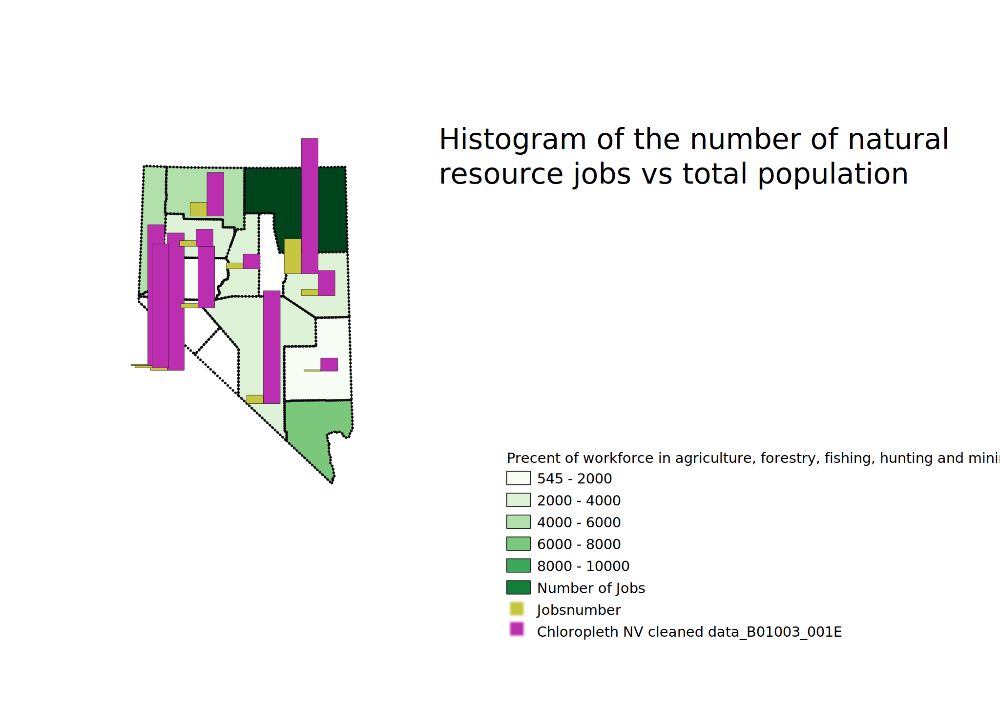

Homework 8: Data categorization
Quentin McCalla
My 3 different ways of showing my chloropleth.

This shows a histogram and the number of natural resource jobs. I decided to use a histogram because I wanted to see how effective and what it would look like with respect to my data. A pro for this is that it is another way of showing a comparison of two values. However,
there are a lot of cons to this map. Counties with high populations do not show up and their total populations are ridiculously large and make the graph
not very readable.

This map is proportional pie chart graph. I used this graph because a pie chart shows what percentage of people work in the industry and making it proportional allows viewers to quickly see which counties have higher values. The pros are that it shows the pie charts over the counties that they represent. The proportional aspect is a pro
because it enlarges counties with a higher number of natural resource jobs. A con of this is that with smaller counties on the western side of the state the
graphs are all close together and congested.

The data that I got from the census was already in a percentage form. I chose to present the data this way to show the raw number of jobs. For this graph I decided to use a formula to find out the number of natural resource job in each county. A pro of a total count method is that it shows the raw number and location of jobs. The cons are that
it is more truthful and accurate to use a per capita way of measurement.